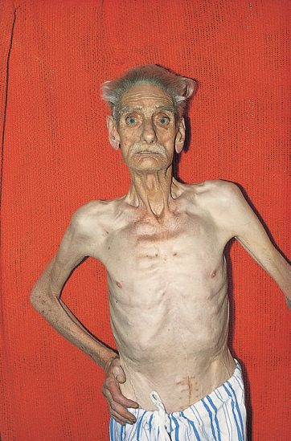
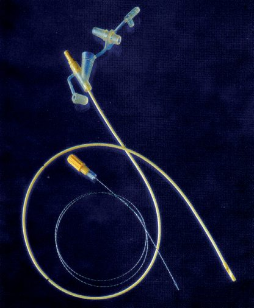
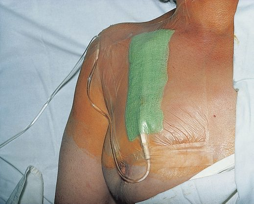
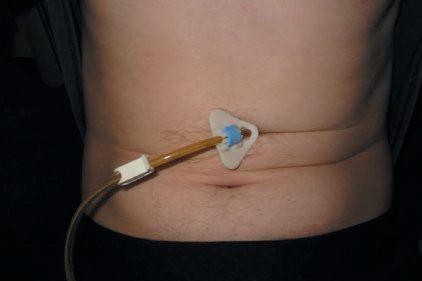

Nutrition in Surgery
Summary
- Optimal nutritional status, both pre- and postoperatively, is a key factor in reducing perioperative complications and improving surgical outcomes, yet the pathologies requiring surgery often themselves contribute to malnutrition [1].
- Nutrition is critical to surgical wellbeing because timely support reduces acute catabolism and resultant skeletal muscle weakness from increased metabolic demand [2].
- Nutritional assessment, appropriate route selection (enteral preferred over parenteral where feasible), and awareness of refeeding syndrome are the central practical concerns of perioperative nutrition [3][4].
Definition
- Malnutrition can be identified using BMI thresholds: a BMI <18.5 kg/m² with unintentional weight loss >10% in the last 3–6 months, or a BMI <20 kg/m² with unintentional weight loss >5% in the last 3–6 months, indicate a need for nutritional support [1].
- Nutritional status is assessed using the "ABCD" framework: Anthropometry (weight change, BMI, mid-upper arm circumference, skinfold thickness), Biochemistry (albumin, CRP, haemoglobin, electrolytes), Clinical evaluation (symptoms and comorbidities affecting intake/absorption), and Dietary assessment [1].
- Caloric need is approximately 20–25 kcal/kg/day for an average healthy adult, comprising roughly 20% protein calories, 20% fat calories and 60% carbohydrate calories [3].
Pathophysiology
- In short-term fasting, falling insulin and rising glucagon drive glycogenolysis (liver and skeletal muscle glycogen converted to glucose via the Cori cycle).
- Glycogen stores are depleted after approximately 24–40 hours (24–36 hours per ABSITE Review), after which gluconeogenesis from amino acids (especially alanine and glutamine), lactate, glycerol and fructose predominates, with amino acids generated by skeletal muscle catabolism (up to 75 g/day) [1][3].
- Skeletal muscle lacks glucose-6-phosphatase, so it cannot release free glucose systemically, the liver is the source of systemic glucose during stress or starvation [3].
- Beyond 48 hours of fasting, lipolysis of fat stores predominates, generating glycerol (converted to glucose) and fatty acids, which are converted to ketones used as a metabolic substrate by most tissues, sparing muscle protein (adaptive ketogenesis).
- Resting energy expenditure falls from approximately 25–30 kcal/kg/day to 15–20 kcal/kg/day, though a glucose requirement of about 200 g/day persists [1].
Metabolic response to injury and surgery
- The metabolic response to trauma, surgery and sepsis differs from simple starvation: increased counter-regulatory hormones (adrenaline, noradrenaline, cortisol, glucagon, growth hormone) drive increased energy requirements (up to 40 kcal/kg/day), increased nitrogen requirements, insulin resistance and glucose intolerance, preferential lipid oxidation, increased gluconeogenesis and protein catabolism, loss of adaptive ketogenesis, and fluid retention with hypoalbuminaemia [1].
- Protein-conserving mechanisms that operate in simple starvation do not occur after trauma or surgery because of catecholamine and cortisol effects, so trauma draws on a more mixed fat-and-protein energy source than starvation alone [3].
- Metabolism after injury/infection follows an initial hypometabolic phase followed by a dramatic rise in energy expenditure at around 2 weeks, mediated by sympathetic activation and catecholamine release, proportional to the degree of insult (thermal injury and severe infection have the highest energy demands) [4].
- Postoperative metabolic phases are described as a catabolic phase (postoperative days 0–3, negative nitrogen balance), a diuresis phase (days 2–5) and an anabolic phase (days 3–6, positive nitrogen balance) [3].
Clinical features
- Severe malnutrition presents with fat and muscle wasting [1].
- Preoperative signs of severe malnutrition include acute weight loss >20% in 3 months, albumin <3.0 g/dL, transferrin <200, and anergy to skin antigens.
- Low albumin (<3.0) is a strong risk factor for postoperative morbidity and mortality [3].
- Clinical evaluation looks for upper GI symptoms (nausea, vomiting, early satiety, dysphagia, reflux, bloating) and lower GI symptoms (diarrhoea, constipation) suggesting inadequate intake or malabsorption, and comorbidities such as cancer, inflammatory bowel disease, liver disease, and neurological conditions (stroke, Parkinson's, dementia) that impair nutritional status [1].
- Micronutrient deficiency syndromes include: chromium deficiency (hyperglycaemia, encephalopathy, neuropathy), selenium (cardiomyopathy, weakness), copper (pancytopenia), zinc (poor wound healing, alopecia, rash), phosphate (weakness/ventilator-weaning failure, encephalopathy, decreased phagocytosis), thiamine/B1 (Wernicke's encephalopathy, beriberi cardiomyopathy), pyridoxine/B6 (sideroblastic anaemia, glossitis, peripheral neuropathy), cobalamin/B12 and folate (megaloblastic anaemia, glossitis, peripheral neuropathy for B12), ascorbic acid/C (scurvy, poor wound healing), niacin (pellagra: diarrhoea, dermatitis, dementia), essential fatty acids (dermatitis, hair loss, thrombocytopenia), vitamin A (night blindness), vitamin K (coagulopathy), vitamin D (rickets/osteomalacia/osteoporosis), and vitamin E (neuropathy) [3].

Etiology
- Malnutrition in surgical patients arises from reduced intake (dysphagia, obstruction, anorexia), malabsorption (short bowel syndrome, high-output stoma, enterocutaneous fistula, pancreatic insufficiency), and increased catabolic demand from underlying disease (cancer, sepsis, burns, trauma, inflammatory bowel disease) [1].
- Patients undergoing major surgery for head and neck or abdominal cancers (laryngeal/pharyngeal resection, oesophagectomy, gastrectomy, pancreaticoduodenectomy) are especially likely to have preoperative nutritional depletion and postoperative difficulty eating due to oedema, obstruction, delayed gastric emptying and ileus [1].
- Resection of the ileum causes bile-salt malabsorption and steatorrhoea (loss of even 100 cm can cause this), while remnant small bowel of less than 200 cm produces short bowel syndrome, and less than 100 cm produces a particularly severe form with daily bowel losses that can exceed 4 litres [1].
- Refeeding syndrome occurs on refeeding after prolonged starvation/malnutrition (alcohol abuse is often a contributing factor), caused by a shift from fat to carbohydrate metabolism that drives insulin release and a resultant intracellular shift of phosphate, magnesium, potassium and calcium [3][5].
- Cachexia (anorexia, weight loss, wasting) is thought to be mediated by TNF-α via glycogen breakdown, lipolysis and protein catabolism.
- Kwashiorkor reflects isolated protein deficiency, and marasmus reflects overall starvation [3].
Diagnosis
Nutritional risk screening uses tools such as the Malnutrition Universal Screening Tool (MUST), developed by the British Association for Parenteral and Enteral Nutrition (BAPEN), which combines BMI, unintentional weight loss and acute disease effect to identify at-risk individuals for dietician referral [1].
Biochemical markers
Biochemical markers include albumin (half-life 18 days), transferrin (half-life 8 days) and prealbumin (half-life 2 days, the most acute indicator of nutritional status, followed by retinol-binding protein and transferrin). Normal ranges are protein 6.0–8.5 g/dL, albumin 3.5–5.5 g/dL, prealbumin 15–35 mg/dL [3].
Energy and nitrogen calculations
- Ideal body weight can be estimated as: men = 106 lb + 6 lb per inch over 5 feet; women = 100 lb + 5 lb per inch over 5 feet [3].
- Basal energy expenditure is calculated with the Harris–Benedict equation (based on weight, height, age, gender) [3] + (6.25 × height cm) − (5 × age years) − 161 for adults).
- The respiratory quotient (RQ, from indirect calorimetry) is the ratio of CO2 produced to O2 consumed: RQ >1 indicates lipogenesis/overfeeding (treated by reducing carbohydrate/caloric intake, as excess carbohydrate conversion to fat generates CO2 that can impair ventilator weaning); RQ <0.7 indicates ketosis/fat oxidation (starving, treated by increasing carbohydrate/caloric intake); pure fat utilisation gives RQ 0.7, pure protein 0.8, pure carbohydrate 1.0, and balanced nutrition approximately 0.825 [3].
- Nitrogen balance is calculated from 24-hour urine nitrogen collection: N balance = (protein intake/6.25) − (24-hour urine nitrogen + 4 g), since 6.25 g of protein contains 1 g of nitrogen; positive balance indicates anabolism, negative indicates catabolism, and total protein synthesis in a healthy 70-kg male is about 250 g/day [3].
Refeeding risk
Refeeding syndrome risk criteria: one or more of BMI <16 kg/m², unintentional weight loss >15% in 3–6 months, little/no intake for >10 days, or low potassium/phosphate/magnesium before feeding; or two or more of BMI <18.5 kg/m², weight loss >10% in 3–6 months, little/no intake for >5 days, or history of alcohol abuse/relevant medications (insulin, chemotherapy, antacids, diuretics) [1]. Calcium and phosphate are useful baseline measurements specifically in anticipation of refeeding syndrome [1].
Scoring and Severity
The Malnutrition Universal Screening Tool (MUST) is the principal validated screening/severity tool referenced in the source texts, stratifying malnutrition risk from combined BMI, weight-loss and acute-disease-effect scores [1]. Refeeding syndrome risk stratification (as above, "high risk" vs "two-or-more-factor" criteria) functions as a severity/risk scoring system for this specific nutritional complication [1].
Treatment and Management
- Enteral nutrition (delivery of nutrients into the GI tract) should always be the preferred route where possible: it preserves gut mucosal barrier and immunity, prevents gut atrophy, and is associated with reduced infection rates, better wound healing, reduced ICU/hospital length of stay, lower cost, and lower risk of vascular access/infectious complications compared with parenteral nutrition [1][4].
- Early enteral nutrition (within 24–48 hours after resuscitation/stabilisation, or within the first 24 hours of admission per Schwartz's ABSITE) increases survival in sepsis, pancreatitis and burns and is associated with decreased development of infected pancreatic necrosis when delivered via a naso-jejunal tube past the ligament of Treitz [3][6].
- Patients can tolerate about 5–7 days without eating before parenteral nutrition should be started if enteral feeding is not possible [3].
- Bailey & Love similarly recommends considering artificial nutritional support after 5 or more days of inadequate intake, started earlier in chronically malnourished patients [1].
Enteral routes and tube feeding
- Enteral routes include oral supplements (~200 kcal and 2 g nitrogen per 200 mL carton), nasogastric/nasojejunal tubes, and feeding gastrostomy/jejunostomy (considered when normal feeding is not possible or unlikely to resume for >4 weeks, e.g. after stroke).
- Tube feeding typically starts at 10–20 mL/h and increases to about 75 mL/h if tolerated [1][3].
- Tube-feeding complications: diarrhoea is managed by slowing the rate, adding fibre, or using less-concentrated feeds; high gastric residuals are managed with prokinetics (metoclopramide, erythromycin) [3].
Parenteral nutrition
- Central venous (total) parenteral nutrition is glucose-based (10% amino acid solution, 25% dextrose solution, electrolytes, minerals and vitamins, typically 2–3 L given at 100–150 mL/h; maximum glucose administration 3 g/kg/h), with lipids given separately (10% lipid solution = 1.1 kcal/mL; 20% lipid solution = 2 kcal/mL).
- Peripheral parenteral nutrition (PPN) is fat-based [3].
- Vitamin K must be added separately to TPN, and patients with alcohol use disorder require added thiamine, folate and multivitamins [3].
Caloric targets and refeeding
- Caloric targets: stable patients need 20–30 kcal/kg ideal body weight/day, rising to 30 kcal/kg/day (or 30–35 kcal/kg/day with a 1.6× adjustment, per Schwartz's ABSITE) under severe stress, with protein around 1.5 g/kg ideal body weight/day (about 20% of energy requirement) in illness, and carbohydrate 45–65% of total calories [1][4].
- In burns specifically: calories = 25 kcal/kg/day + (30 kcal/day × %burn); protein = 1–1.5 g/kg/day + (3 g/day × %burn), not exceeding 3000 kcal/day [3].
- Refeeding syndrome prevention: start nutrition at no more than 50% of estimated target energy needs (increasing over 24–48 hours according to tolerance), or as low as 10 kcal/kg/day in the highest-risk patients (increasing slowly to full needs over 4–7 days), with frequent monitoring and replacement of phosphate, potassium, calcium and magnesium, plus supplementary thiamine, vitamin B and multivitamins [1][3].
Carbohydrate loading and immunonutrition
Preoperative carbohydrate loading (given as oral solutions up to 4 hours before anaesthesia) reduces the early catabolic response to major surgery, and is a core component of Enhanced Recovery After Surgery (ERAS) programmes, alongside early postoperative reintroduction of nutrition (carbohydrate-rich fluids from 6 hours post-surgery, light diet from 48 hours) [2]. Nutritional immunomodulation (immunonutrition) supplements provide greater arginine content than standard oral supplements to improve immunity and tissue repair, plus omega-3 fatty acids to mediate the inflammatory response, though evidence of a statistically significant difference in infectious complications versus standard supplementation is lacking [7].
Feeding access


NICE guidance on nutrition support
The UK defines malnutrition by three numeric criteria, and "at risk of malnutrition" by two more. Knowing which is which is the whole of the screening step. Nutrition support should be considered in people who are malnourished, defined by any of [8]:
- a BMI below 18.5 kg/m²
- unintentional weight loss greater than 10% within the last 3 to 6 months
- a BMI below 20 kg/m² together with unintentional weight loss greater than 5% within the last 3 to 6 months
- And in people at risk of malnutrition, defined by any of: having eaten little or nothing for more than 5 days and/or being likely to eat little or nothing for the next 5 days or longer, or having poor absorptive capacity, high nutrient losses, or increased nutritional needs from causes such as catabolism [8].
- Screening should assess BMI and percentage unintentional weight loss, and also consider the time over which intake has been unintentionally reduced and the likelihood of future impaired intake. The Malnutrition Universal Screening Tool (MUST), for example, may be used [8].
- NG180 attaches this to the surgical pathway: offer preoperative nutritional screening to people having intermediate surgery or major or complex surgery [9].
The standard prescription is a set of four numbers for a patient who is neither severely ill nor at refeeding risk [8]:
| Component | Total intake per day |
|---|---|
| Energy | 25 to 35 kcal/kg, including that derived from protein; lower if BMI over 25 |
| Protein | 0.8 to 1.5 g/kg (0.13 to 0.24 g nitrogen/kg) |
| Fluid | 30 to 35 ml/kg, with allowance for extra losses from drains and fistulae and extra input from other sources such as intravenous drugs |
| Micronutrients | Adequate electrolytes, minerals, micronutrients allowing for pre-existing deficits, excessive losses or increased demands, and fibre if appropriate |
- Table reformats the CG32 nutritional prescription [8]. Total intake includes food, oral fluid, oral nutritional supplements, enteral and parenteral nutrition and intravenous fluid, which is the clause that most often makes a prescription look larger than intended [8].
- In seriously ill or injured people needing enteral tube feeding or parenteral nutrition, start at no more than 50% of estimated target energy and protein needs and build to full needs over the first 24 to 48 hours, while providing full requirements of fluid, electrolytes, vitamins and minerals from the outset [8].
- People who have eaten little or nothing for more than 5 days start at no more than 50% of requirements for the first 2 days [8].
- Refeeding syndrome has its own two-part risk definition and its own regimen, and the caloric ceilings are low.
- A person is at high risk if they have one or more of: BMI below 16 kg/m²; unintentional weight loss greater than 15% in the last 3 to 6 months; little or no nutritional intake for more than 10 days; or low potassium, phosphate or magnesium before feeding
- Or if they have two or more of: BMI below 18.5 kg/m²; unintentional weight loss greater than 10% in the last 3 to 6 months; little or no intake for more than 5 days; or a history of alcohol misuse, or of drugs including insulin, chemotherapy, antacids or diuretics [8].
For those people, the prescription should consider [8]:
- starting nutrition support at a maximum of 10 kcal/kg/day, increasing slowly to meet or exceed full needs by 4 to 7 days
- only 5 kcal/kg/day in extreme cases, for example BMI below 14 kg/m² or negligible intake for more than 15 days, with continuous cardiac rhythm monitoring in these people and in anyone with or developing an arrhythmia
- restoring circulatory volume and monitoring fluid balance and overall clinical status closely
- immediately before and during the first 10 days of feeding, oral thiamin 200 to 300 mg daily, vitamin B co strong 1 or 2 tablets three times a day (or a full-dose daily intravenous vitamin B preparation), and a balanced multivitamin or trace element supplement once daily
- supplements of potassium (likely 2 to 4 mmol/kg/day), phosphate (0.3 to 0.6 mmol/kg/day) and magnesium (0.2 mmol/kg/day intravenous, 0.4 mmol/kg/day oral) unless pre-feeding plasma levels are high
The last line of that recommendation is the counter-intuitive one and is worth quoting exactly: pre-feeding correction of low plasma levels is unnecessary [8]. Care should be delivered by professionals appropriately skilled and trained with expert knowledge of nutritional requirements and nutrition support [8].
Starting and stopping nutrition support is framed as an ethical and legal decision, not only a clinical one. Obtain consent if the person is competent; act in their best interest if not; and be aware that the provision of nutrition support is not always appropriate, since decisions on withholding or withdrawing it require consideration of both ethical and legal principles, at common law and by statute including the Human Rights Act 1998 [8].
Nutritional access procedures
Surgical/procedural routes for nutritional access include surgically or endoscopically placed feeding gastrostomy and jejunostomy, and percutaneous endoscopic gastrostomy (PEG) tube placement when normal feeding is not possible or unlikely to resume for over 4 weeks [1][3]. Intestinal transplantation is an option for patients dependent on lifelong parenteral nutrition due to short bowel syndrome, when recovery of function to allow weaning from home parenteral nutrition becomes unlikely (typically beyond 3 years from onset) [1].

Complications
- Refeeding syndrome causes hypophosphataemia, hypokalaemia and hypomagnesaemia leading to arrhythmias, muscle weakness, respiratory or cardiac failure, oedema, lethargy, seizures, confusion, and (per Schwartz's ABSITE) respiratory failure, the syndrome can be fatal in its most severe form, with decreased ATP as the most significant underlying problem [1][3][5].
- Central line complications of parenteral nutrition include line sepsis (up to 15% of patients, associated with significant morbidity/mortality, fungal line infections can cause uveitis and endocarditis), line thrombosis (risking SVC occlusion and pulmonary embolism), and line blockage [1].
- Metabolic complications of long-term parenteral nutrition include blood sugar derangement, liver dysfunction (deranged LFTs in at least 25% of patients, fatty liver, and in a minority progression to fibrosis/cirrhosis termed intestinal failure-associated liver disease, IFALD), and metabolic bone disease (osteoporosis/osteomalacia with fracture or kidney stone risk) and vitamin/trace-element excess or deficiency [1].
- Long-term TPN complications also include cirrhosis; short-term TPN complications relate to the line itself (pneumothorax, infection) [3].
- Ileal resection causes bile-salt malabsorption/steatorrhoea and increased gastric motility/intestinal transit leading to diarrhoea.
- Short bowel syndrome (remnant small bowel <200 cm) produces diarrhoea, malnutrition and dehydration, with an acute phase (first weeks: high intestinal losses, gastric hypersecretion, hypergastrinaemia, risking acute renal failure and acid-base imbalance) followed by an adaptation phase over 1–2 years [1].
Prognosis
- Correction of preoperative nutritional deficits reduces perioperative complications and improves surgical outcomes, whereas unrecognised poor preoperative nutritional status unnecessarily increases operative risk and compromises recovery [1].
- Low albumin (<3.0) is a strong independent risk factor for postoperative morbidity and mortality [3].
- In short bowel syndrome, some patients recover sufficient intestinal adaptation over 1–2 years to no longer require parenteral nutrition, but recovery of function sufficient to wean from home parenteral nutrition becomes unlikely beyond 3 years from onset, at which point intestinal transplantation may be considered [1].
References
- Bailey & Love's Short Practice of Surgery, 28th ed., Ch. 25 Nutrition and fluid therapy
- Oxford Handbook of Clinical Surgery, 5th ed., Ch. 2 Principles of surgery, Enhanced recovery after surgery
- The ABSITE Review, 2022, Ch. 10; formula variant given in Bailey & Love 28e, Ch. 25: BMR = (10 × weight kg
- Schwartz's Principles of Surgery: ABSITE and Board Review, Ch. 2 Systemic Response to Injury and Metabolic Support
- Schwartz's Principles of Surgery: ABSITE and Board Review, Ch. 3
- Schwartz's Principles of Surgery: ABSITE and Board Review, Ch. 6
- Schwartz's Principles of Surgery: ABSITE and Board Review, Ch. 50
- NICE Clinical Guideline CG32: Nutrition support for adults: oral nutrition support, enteral tube feeding and parenteral nutrition. National Institute for Health and Care Excellence, London, UK, 2006, updated 2017., 1.2; 1.3.1; 1.3.2; 1.3.4; 1.4.2; 1.4.4; 1.4.5; 1.4.6, Box 1; 1.4.7; 1.4.8 www.nice.org.uk
- NICE Guideline NG180: Perioperative care in adults. National Institute for Health and Care Excellence, London, UK, 2020., 1.3.10; 1.3.11 www.nice.org.uk